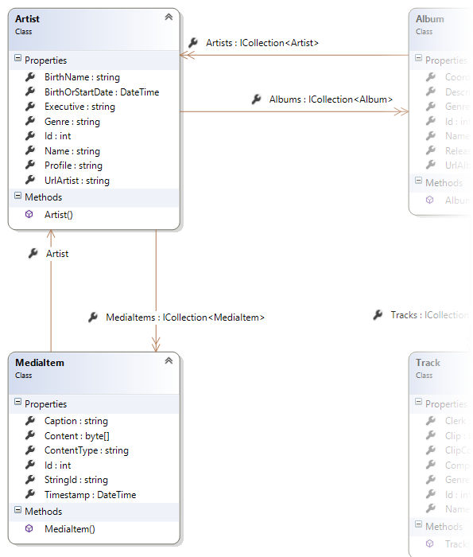

INT422 Assignment 9
Continue using security principles. Rich text handling. Working with non-text media types.
Read/skim all of this document before you begin work.
Due date
Section A: Tuesday, April 17, 2018, 11:59pm
Grade value: 8% of your final course grade
If you wish to submit the lab before the due date and time, you can do that.
Objective(s)
There are several objectives for this Assignment 9:
Introduction and overview
We continue working with the music business problem domain in this assignment.
The web app needs to be enhanced, to support security concepts, as well as richer data. The richer data will include rich text (i.e. HTML markup), and internet media types (e.g. image, audio, video).
The teacher team has posted a working sample solution to Azure:
https://wsong18-wa2017a9.azurewebsites.net/
Tasks that should be done during the first week
You will be able to do these tasks now:
Tasks that can be done during the second week
Then, after the remaining topics are introduced, you will be able to do these tasks:
Please note that you will also implement security-related content while implementing these tasks. This includes 1) protection of some actions to specific users/groups, and 2) conditionally rendering content.
Specifications overview and work plan
Here’s a brief list of specifications that you must implement:
Here is a brief work plan sequence:
Create the project, based on the project template
Create a new web app, named Assignment9. It MUST use the new “Web app project A9” project template. Get this new project template from the course website, and install it into your Visual Studio configuration.
After creating the web app, customize the home page. Change the large “Learn more >>” button to “Assignment 9 on Azure” and set the button link to the URL of the assignment 9 on Azure.
Build/compile the app, to refresh the packages. Do NOT run the app yet.
Warning: Your teachers believe that the best way to work through this assignment is to do incrementally. Get one thing working, before moving on to the next. Test each part.
Temporarily disable error-handling for HTTP errors 500 and higher
Open the Global.asax.cs source code file.
In the Application_EndRequest() method, temporarily comment out the “if (code >= 500)…” statement.
Partial view Upload.cshtml
Go to the Shared folder. You may need to add the folder and file EditorTempletes/Upload.cshtml if they do not exist.
Customize the app’s appearance
You will customize the appearance all of your web apps and assignments. Never submit an assignment that has the generic auto-generated text content. Make the time to customize the web app’s appearance.
For this assignment, you can defer this customization work until later. Come back to it at any time, and complete it before you submit your work.
Follow the guidance from Assignment 1 to customize the app’s appearance.
Load data and test your app
The first thing you need to do after creating your assignment project is to login with any user/password to create the first default account: admin@example.com. Then login with this account.
Like you probably did before, use the LoadData controller, and call the manager object’s LoadData() method to load initial data for the web app.
Test your work by attempting to register a new user. The new role claim list should appear on the “register” page, and enable the correct configuration of a new user.
Click the image to open it full-size in a new tab/window.
Data storage preparation tasks
Next, enable migrations. That will create a starting point (snapshot) of the database structure.
Prepare for security-aware content
We will continue to use the user account security ideas that were implemented in Assignment 8. In other words:
Add these kinds of users to your app, using your updated Register page.
Recently, you learned how to conditionally enable functionality, based on information in the security principal (e.g. authenticated or not, user info, role claim info). Manu items, content containers could be visible, or not, depending upon the user.
In this assignment, you have to implement these ideas. In general:
As you make progress when coding a feature, pause for a moment, and ask whether security influences its presence in the user interface. Use common sense. If you’re not sure, ask a friend who knows, or ask your professor.
Preparing for rich text editing
The Artist and Album design model classes need another string property, to hold rich text.
In the Artist class, add a new string property named “Portrayal”. Not required, and lengthy. Its intention is to capture content about the history, biographical data, and musical style of the artist.
In the Album class, add a new string property named “Depiction”. Not required, and lengthy. Its intention is to capture content about the theme, style, content, and assembly of the album.
Build/compile the app, and run/load it in a browser. Uh oh, an error:
As it states, the data model has changed.
To fix this, review the coverage of the Migrations feature in the week 8 Lecture Notes:
Later, remember this “recipe” for enabling rich text editing and display:
Implement “get all” for Artist and Album
We want to be able to get to “add new” Artist and Album as soon as we can. Before doing that, it makes sense to implement “get all” for them, so that you have views that shows lists of existing artists or albums.
Use your memory, the class notes, or the patterns summary document that you were supposed to create (and submit to your teacher) two months ago (and documented on the week 8 Lecture Notes page), and implement this functionality.
Maybe your artist list looks like the following. Click the image to open it full-size in a new tab/window.
Maybe your album list looks like the following. Click the image to open it full-size in a new tab/window.
Implement “add new” for Artist
This task will be similar to the “add new” Artist task that you coded in Assignment 8. However, the updated Artist design model class has a new “Portrayal” string property, which will hold rich text.
Implement this task. Again, use your memory, class notes, or the patterns summary document to complete this task. Make sure that you implement the recently learned rich text editing tasks (also documented above). It may be possible to re-use some of your design and code from Assignment 8.
When you’re testing, you can typically get portrayal information from Wikipedia (or other web resources).
Maybe your “add new” Artist view will look like the following. Click the image to open it full-size in a new tab/window.
Implement “add new” for Album
This task is NOT exactly the same as the Assignment 8 “add new” Album task.
This task will be much simpler. It will enable the browser user to add a new album for a specific known artist. You will NOT display a (checkbox) list of all artists, or a (checkbox) list of all tracks. As a result, it will be more similar to Assignment 8’s “add new” Track task, or others from the past (e.g. “add new” Vehicle task, for a specific known manufacturer).
Therefore, on a “get one” details view for Artist, add a link to enable “Add new album for this artist”. Then, in the Artists controller, implement the “add new” Album functionality.
Maybe your “add new” Album view will look like the following. Click the image to open it full-size in a new tab/window.
Prepare for non-text media types
In this app, two scenarios will be implemented for non-text media type handling.
In the simple scenario, the existing Track entity will be modified to handle an audio media item.
In the more complex scenario, a new ArtistMedia entity will be created. This new entity will be dedicated to the description and storage of media items. The existing Artist entity will be modified to handle a collection of ArtistMedia objects.
Media type – add audio to the Track entity
As noted above, this is the simple scenario. The existing Track entity will be modified to handle an audio media item.
Do that now. Follow the guidance in the week 10 Lecture Notes, and in the PhotoProperty code example.
When you build/compile, and the load/run in a browser, the “model… changed” error appears. Again, add a migration, and update the database.
Implement “get all” and “get one” track
Now it’s time to implement these use cases. You will do work in the Manager class, a Tracks controller, and some views. It may be possible to re-use some of your design and code from Assignment 8.
Your track list may look like the following. Click the image to open it full-size in a new tab/window.
The details view for the “get one” use case should include an HTML audio player for the track’s sample clip.
|
<audio src="/clip/@Model.Id" controls="controls"></audio> |
As you can see, the value of the src attribute is a path like this:
That means that we need an action/method – somewhere – to fetch the clip. The PhotoProperty code example used a dedicated controller for that. You can do that if you wish.
Alternatively, you can simply add a method to the Tracks controller that will work with the manager object to fetch and deliver the clip. Your choice. Whatever you do, make sure you use attribute routing, for a clean URL.
Your track details view may look like the following. Notice the disabled state of the audio player, because it could not find the audio clip data. (We’ll fix that soon.) Click the image to open it full-size in a new tab/window.
Implement “add new” track
This will work almost exactly like it did in Assignment 8: A browser user can add a track for a specific and known album. Again, add a hyperlink on the album details view to “Add a new track to this album”. Locate the “add new” track actions/methods in the Albums controller.
To this base, you will add the ability to upload a sample clip of the track. Again, follow the guidance in the week 10 Lecture Notes, and in the PhotoProperty code example.
Your track create view may look like the following. Click the image to open it full-size in a new tab/window.
After completing the form, it look like the following. Click the image to open it full-size in a new tab/window.
Finally, after a successful save, it look like the following. Notice the enabled state of the audio player, with controls that can be used. Click the image to open it full-size in a new tab/window.
Implement track “Edit existing” and “Delete item”
Among the entities of Artist, Album and Track, only Track need to implement “Edit existing” and “Delete item”. A browser user can edit or update clip for an existing track. All tracks created using initial data, should have clips updated. Click the image to open it full-size in a new tab/window.
You will need track clips. Where can you get some? Here are the links: clip1.mp3, clip2.mp3, clip3.mp3. Each are about 15 seconds in length.
Please do not use full-length tracks as clips. They’re too big. Multi-megabyte. Big problem when submitting your work on Blackboard.
Instead, limit your clip length to ten to fifteen seconds.
Do you want to create your own clips?
There are many ways to do this. Here is one way.
Use the Audacity software. File > Open an existing audio file that’s on your computer.
Click a location about 15 seconds into the track.
Press Shift+End (or Edit > Select > Cursor to track end). Press Delete.
If you want a nice fade-out, click a location about 2 seconds from the end of the track. Shift+End again. Then Effects > Fade Out. (This works too for Fade In at the beginning of the track.)
Then File > Export Audio
Media type – add a media
collection to the Artist entity
As noted above, this is the more complex scenario. A new
ArtistMedia entity will be created, and the existing Artist entity will be
modified to handle a collection of ArtistMedia objects.
In this scenario, the design and coding
approach will be similar to the one in the recent PhotoEntity code
example.
The one difference is that we will permit any
kind of media item to be associated with an artist object. In other words,
a photo, some audio, or video, or even a digital document like a PDF or
Word-or-Excel document.
What’s different here
During rendering, in the view code, we’ll make
decisions about how to render a media item:
If image, then render an HTML <img>
element.
If audio, then render an HTML <audio>
element.
If video, then render an HTML <video>
element.
If PDF, or Word, or Excel (etc.), then render
an HTML <a> element, which uses the download-and-save workflow.
Implementing Artist object – MediaItem
collection
Add a MediaItem design model class, probably
with the same properties and constructor design that are in the PhotoEntity
code example’s dedicated media item class.
It will be associated with Artist, which has a
one-to-many association with MediaItem.

Remember to add the DbSet<TEntity>
property in the data context class.
Build/compile, and run in a browser. It will
show an error, because the “model backing the ‘ApplicationDbContext’ context
has changed since the database was created.” Add another migration, and update
the database, before continuing.
View model classes – MediaItem
A “…Base” class, with identifying and
descriptive properties, is needed.
Hint and tip:
Include the ContentType property. It will be
useful later.
A “…Content” class, for the digital content of
the media item, is needed.
Next, we need to write the view model classes
that handle the “add media item for a known/existing artist” workflow.
An “…AddForm” class is needed. As you have
learned, it MUST have an artist identifier, and it SHOULD have some descriptive
information about the artist, to display on the HTML Form.
An “…Add” class is needed. It MUST have the
artist identifier, and the properties that capture information and data for the
media item.
Remember to add AutoMapper maps to cover the
use cases.
Manager class method for “add media item
for artist”
The design and coding approach will be similar
to any one-to-many scenario where you are adding a new object for a
known/existing object. This approach has been implemented many times before:
Here, we are adding a new MediaItem for an
existing Artist.
Therefore, follow this well-known coding
pattern. Add in the media-handling code, to extract and save the media item
data from the HttpPostedFileBase object.
Artists controller “add new” media item
handling
As you have learned, when you’re adding an item
to a dependent collection, you start with the dependent object.
In other words, we work with the Artists
controller, and code the “add new” media item there. You have already done that
with “add new” album, so do the same for “add new” media item. Yes, the
Coordinator role claim will be needed to complete this task.
Create the GET method. Use attribute routing.
Generate the view. Remember to:
At this point, your view may look something
like the following. Click the image to open it full-size in a new
tab/window.
Next, create the POST method. Test your work.
Add the dedicated media item delivery
controller and Manager method
Next, add the dedicated media item delivery
controller.
From the PhotoEntity code example, you should
also include the download-and-save functionality.
Add a Manager class method that will deliver a
media item object.
Prepare to display the media items
Let’s modify the existing artist details view,
and all its bits and pieces.
We will create a new view model class,
ArtistWithMediaInfo (in the style similar to the PhotoEntity code
example). Remember to add an AutoMapper map.
In the Manager class, create another “get one”
method (copy/paste), but it will fetech/include the media items, and return
an object of the new type (above).
In the Artists controller, call that new
manager method. You’ll have to change the model type in the view too.
At this point in time, build/compile, and run
in a browser. The app should continue to work.
Displaying or rendering media items
There are many ways to display or render media
items. Images and sounds can use the built-in HTML elements.
For other content – digital documents for
example – the content can be rendered as a hyperlink that references the media
item. For best results, use the save-to-download feature for their URLs.
If you want to render a text-based hyperlink,
do it. Alternatively, you can include icons in your app, and render those as
the hyperlink. Here are some icons that you can save and use:
In the teacher’s sample solution, we chose to
render the media items in groups. For example, we first rendered all the
photos. Then the sounds. And then the digital documents. Click the image
to open it full-size in a new tab/window.
Each group was rendered with “foreach” code,
but using only the desired media type. For example:
|
|
|
Publish to Azure
Follow the guidance in this document to deploy/publish your web app to Azure:
https://scs.senecac.on.ca/~wei.song/int422/assignments/INT422-Assignment7.html
Please note that you may have to create a new database server. And you need to create a new SQL Database.
You may need to delete the items that is longer needed For example, if you have your assignment 7 marked already, you can remove the web app server, database server and database used for assignment 7 on Azure.
Suggested names, assuming that your Microsoft Account name uses the recommended format “wsong18-wa2018”:
Web app: wsong18-wa2018a9
Database server: wsong18-ds2018a9
Database: Assign9Store (or A9Store)
Testing your work
While designing and coding your web app, use the Visual Studio debugger to test your algorithms, and inspect the data that you are working with.
In a browser, test your work, by doing tasks that fulfill the use cases in the specifications.
Important Notes
You must double check your assignment 9 web app:
· You MUST use the provided “Web app project A9” project template and AutoMapper instance API for your assignment.
· The lengthy string properties of Artist class and Album classes for holding rich-text descriptive info must be named as specified.
Fail to do so will lead to a major penalty for the assignment.
Reminder about academic honesty
You must comply with the College’s academic honesty policy. Although you may interact and collaborate with others, you must submit your own work.
Submitting your work
Here’s how to submit your work, before the due date and time:
1. Locate the folder that holds your solution files. In Solution Explorer, right-click the “Solution” item, and choose “Open Folder in File Explorer”. It has three (or more) items: a Visual Studio Solution file, a folder that has your project’s source code, and a “packages” folder. Go UP one level.
2. Make a copy of the folder. This is the version that you will be uploading.
3. Remove the “packages” folder from the copied folder; also, remove the “bin” and “obj” folders.
4. Compress/zip the copied folder. The zip file SHOULD be about 2MB or less in size. If it isn’t, you haven’t followed the instructions properly.
5. Login to My.Seneca/Blackboard. Open the Web Programming on Windows course area. Click the “Assignments” link on the left-side navigator. Follow the link for this lab. Submit/upload your zip file. The page will accept three submissions, so if you upload, then decide to fix something and upload again, you can do so.
{kind=link}
{kind=link}
{kind=link}
{kind=link}
{kind=link}
{kind=link}
{kind=link}
{kind=link}
{kind=link}
{kind=link}
{kind=link}
{kind=link}
{kind=link}
{kind=link}
{kind=link}
{kind=link}
{kind=link}